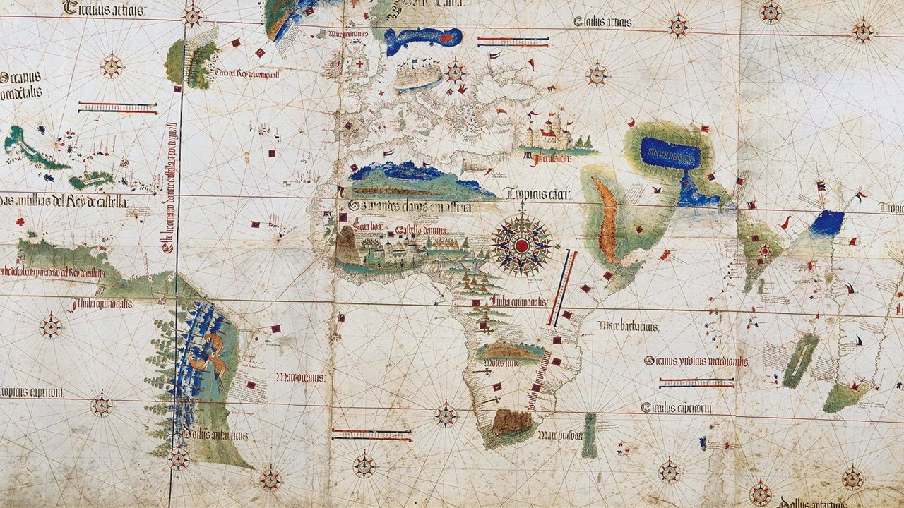
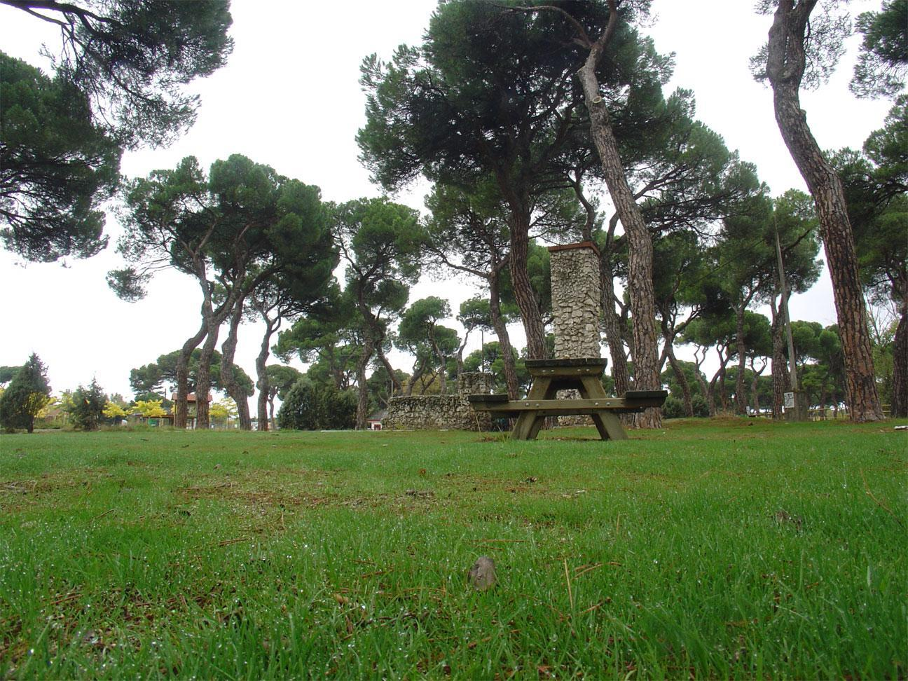
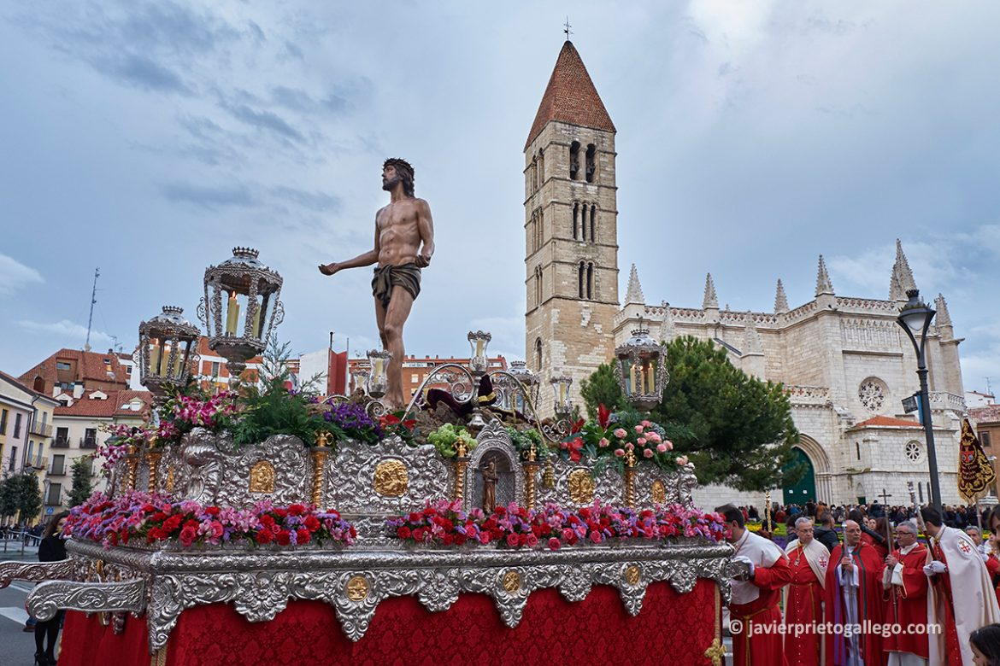

VALLADOLID
LOCALIZACIÓN

Fuente: Wikipedia: Valladolid
LOCALIDADES PRINCIPALES
- Valladolid
- Laguna de Duero
- Arroyo de la Encomienda
- Medina del Campo
- La Cistérniga
- Tordesillas
- Tudela de Duero
- Íscar
- Zaratán
- Aldeamayor de San Martín
Fuente: Saborea España
GEOGRAFÍA
La provincia de Valladolid tiene una extensión de 8111 km²;3 está situada en el centro de la Meseta Norte (mitad superior de la meseta Ibérica) y se caracteriza por la uniformidad de su orografía (777 m s. n. m. de media con un desnivel máximo de 300 metros28) convirtiéndose en la provincia más homogénea geográficamente hablando de España. El río Duero, que la atraviesa de este a oeste, se convierte en una especie de columna vertebral del territorio.
Está dominada por una extensa llanura en la que se distinguen: una zona de páramos calizos definidos por los valles de diferentes ríos, algunos de los cuales destacan en altitud originando un paisaje montañoso de cerros testigos, tales como los montes Torozos, cerro de Cuchillejo (932 m s. n. m.), cerro de San Cristóbal (843 m s. n. m.) y el Sardanedo (854 m s. n. m.); una zona de campiña, de suaves lomas; y separando una y otra, las denominadas «cuestas», profundos barrancos con laderas escarpadas, como las de Prado Ancho, Santovenía de Cabezón, de Pisuerga, etc.
Es la única provincia peninsular que carece absolutamente de montañas (evidentemente tampoco tiene costa), y también -junto con la provincia de Almería- la que menos superficie arbolada tiene (menos del 16 % del territorio).30 El punto más alto está en Castrillo de Duero y es el cerro de Cuchillejo (932 m). El punto más bajo es el río Duero a su paso por Villafranca de Duero (626 m). Por ello, también se trata de la única provincia de Castilla y León que no alcanza los 1000 m de altura sobre el nivel del mar en ningún punto de su territorio.
Red hidrográfica dominada por el río Duero y sus afluentes (Pisuerga, Esgueva, Adaja, Eresma, Duratón, Zapardiel y Cega, entre otros) y completada con el canal de Castilla y el canal del Duero. Un único lago relevante: La Laguna de Duero. La provincia dispone de cuatro embalses: Encinas de Esgueva, San José, Bajoz y Valdemudarra, todos construidos en el siglo XX, salvo el último que fue construido en la primera década del siglo XXI.
HISTORIA
La provincia de Valladolid se constituyó como tal mediante el Real Decreto de 29 de septiembre de 1833 impulsado por el ministro Javier de Burgos,7 quedando adscrita a la región histórica de Castilla la Vieja.
La primera población estable que se asentó en la actual provincia corresponde al pueblo prerromano de los vacceos (zona a la que se denominó "Región Vaccea"9), que fueron pobladores de cultura muy avanzada y, como el resto de pueblos célticos llegaron a la península procedentes del norte de Europa (hay que indicar que también ocuparon territorios que corresponden a otras provincias). Ya entonces era definida por las crónicas como una región "libre y descubierta" y "un país abierto, de trigales, tierra desarbolada" y los vacceos se dedicaban a la ganadería y sobre todo la agricultura (cerealista). En el año 178 los romanos conquistaron el territorio aunque no consiguieron pacificarlo totalmente hasta el 29 Así pues las tierras que conforman la actual provincia quedaron bajo ocupación de estos, hasta las invasiones bárbaras de principios del siglo V d. C. El territorio quedó bajo el control del nuevo Reino Visigodo.
Tras la invasión de la península ibérica por los musulmanes en el año 711, estos llegaron a estas tierras tan solo un año después, en el 712. Sin embargo fue una zona relativamente despoblada. Posteriormente, durante la Reconquista, esta zona fue objeto de batallas entre los musulmanes y el cristiano Reino de León en los siglos IX y X. En 939, tras la batalla de Simancas se afianzó el dominio de la cuenca del Duero por los reinos cristianos. Valladolid fue repoblada en el año 1072 por el conde Pedro Ansúrez. A partir de aquí su historia quedó ligada a la de la Corona de Castilla. Ciudades como Medina del campo o Valladolid se convirtieron en importantes centros administrativos castellanos y además experimentaron un auge económico (mesta, ferias...). Tuvo una gran importancia en el Descubrimiento de América en 1492 (Colón acabará viviendo los últimos años de su vida hasta su muerte en 1506 en Valladolid) y la posterior colonización con personajes como Juan Ponce de León —descubridor de la Florida—. De hecho, en unas casas de Tordesillas, se firmó el Tratado de Tordesillas en el que se decidió el reparto del Nuevo mundo entre los Reyes Católicos y el Reino de Portugal dando lugar a Iberoamérica.
Fuente: National Geographic
La sublevación de los comuneros en 1520 acabó con los cabecillas de esa revuelta ejecutados públicamente en Villalar de los Comuneros. Valladolid llegó a ser la capital del Imperio español entre los años 1601-1606. Cuando el Imperio español empieza a decaer debido a las continuas guerras en las que está involucrado y la aparición de nuevas potencias emergentes, se produce un retroceso económico en la zona, al igual que en el resto de la monarquía. En la guerra de sucesión española (1700-1715) se posicionó del lado del pretendiente borbón, que sería el que consiguió el trono. Durante la Guerra de la Independencia Española contra Francia (1808-1814) (Ver la Guerra de la Independencia en Valladolid), hubo una sucesión de batallas y la continua actuación de guerrilleros como "El empecinado". En el siglo XIX se inicia cierta industrialización relacionada con la agricultura, la ganadería y el ferrocarril.
Ya en el siglo XX desde el inicio de la guerra civil española (1936-1939) fue un importante núcleo de la sublevación (véase también: Guerra Civil Española en la provincia de Valladolid). Durante el franquismo se produjo el éxodo del campo rural a las ciudades industriales, y tras la llegada de la democracia en España, en 1983 la provincia pasó a formar parte de la nueva comunidad autónoma de Castilla y León. Inició un proceso de crecimiento económico que alcanzó su máximo con la Burbuja inmobiliaria en España y luego sufrió la crisis económica de 2008, al igual que el resto del país, hasta 2014. Posteriormente hay un cierto crecimiento económico hasta el año 2020, cuando la pandemia de coronavirus provocó la declaración del estado de alarma en toda España, dando lugar a un fuerte parón económico.
CULTURA
Medina de Rioseco cuenta también con una importante colección de imaginería. Procedente del siglo XVI, de los gremios de artesanos, goza de un gran arraigo entre la población.
Medina del Campo tiene en su haber las Procesiones de Disciplina más antiguas de España, instauradas por San Vicente Ferrer en 1411, con caracteres propios que perviven hasta hoy.
La provincia de Valladolid es una de las más avanzadas en cuanto a museos se refiere teniendo algunos de los más importantes de Castilla y León y varios nacionales. Así pues los museos de la provincia de Valladolid están dotados de última tecnología y todos ellos cuentan con aclaraciones para sordos de forma escrita.La provincia de Valladolid y en colaboración con la Junta de Castilla y León ha puesto en marcha un programa para la difusión de estos y la creación de otros nuevos. La provincia de Valladolid y en concreto su capital cuentan con 3 de las casa museos más importantes de España en ellas vivieron importantísimos personajes de la cultura y la historia de España como Miguel de Cervantes o Cristóbal Colón.
Así pues los museos que operan a pleno rendimiento en la provincia de Valladolid son: Real Monasterio de Santa Clara, Real Monasterio de San Joaquín y Santa Ana, Planetario de Valladolid, Museo Interactivo del Hombre, Museo Provincial del Vino de Valladolid, Museo Pedagógico de Ciencias Naturales, Centro de Interpretación de la Vida Rural de Castilla y León, Museo Oriental, Museo Nacional de Escultura, Museo Interparroquial de Arte Sacro, Museo de la Academia de Caballería, Museo Diocesano y Catedralicio, Museo del Monasterio de Santa Isabel, Museo de Valladolid, Museo de San Antolín, Museo de la Real Academia de Bellas Artes de la Purísima Concepción, Museo de la Iglesia de Santa María, Museo de la Colegiata de San Luis, Museo Comarcal de Arte Sacro, Ecomuseo de Tordehumos, Centro Etnográfico Joaquín Díaz, Parque temático Mudéjar, Casa Museo de Zorrilla, Casa Museo de Colón, Casa Museo de Cervantes, Museo de las Ferias de Medina del Campo, Museo de la Ciencia de Valladolid, Fuenteungrillo, Museo de la Piedra de Campaspero, Museo del Cántaro, Museo del Pan, Museo de las Ferias, Yacimiento de Cerro de la Ermita, Villa romana de Almenara-Puras. En esta lista no están todos los museos de la provincia de Valladolid; se pueden encontrar más en la página web de la diputación provincial.
La provincia tiene varios archivos de documentos históricos entre los que destacan el Archivo de Simancas, el Archivo de la Real Chancillería de Valladolid, el Archivo Histórico Provincial de Valladolid, el Archivo Histórico Municipal de Valladolid, el Archivo General de Castilla y León y el Archivo Iberoamericano de Cetrería. Se dio el título honorífico de Villa del libro36 a Urueña en 1975, ya en hay unas 11 librerías en todo el pueblo, gracias al apoyo que han tenido por parte de la diputación, motivo por el que está incluida dentro de la red de Villas del Libro del mundo.
NATURALEZA
- Reserva Natural de las Riberas de Castronuño-Vega del Duero:
- En la comarca de los Montes Torozos, Es una zona de páramos y vegas sedimentadas. Una zona migratoria y nidificación, para las aves acuáticas. El Duero está rodeado de bosques de ribera y constituye un ecosistema palustre muy interesante. Es una zona de grandes praderas y ausencia de grandes elevaciones. La fauna es abundante, como garza real, martinete, garceta común, culebras, patos cucharas, porrores comunes, porrones moñudos, cormoranes, albotán, águila pescadora, culebra de collar, águila de escalera, garza imperial, halcón peregrino, lagartijas cenicienta y colirroja, lagarto ocelad, ranita de San Antonio, sapos parteros, turón, tejón.
- Lagunas del Raso de Portillo:
- Se trata de tres lagunas de reciente construcción situadas sobre lo que había sido un humedal histórico que llegó a alcanzar las 1900 hectáreas hasta que fue desecado en el siglo XIX. Es un lugar privilegiado para observar gran cantidad de aves que habitan en los humedales o que están de paso en su etapa migratoria.
- Canal de Castilla:
- Se empezó a construir en 1753 y se tardó casi un siglo en finalizarlo ya que fue inaugurado en 1849. Tiene forma de "Y" invertida y su objetivo era el transporte del trigo de Castilla hacia los puertos del Mar Cantábrico pero la llegada del ferrocarril pronto le hizo quedar obsoleto. Atraviesa 9 municipios de la provincia. Con el paso del tiempo, en los márgenes del canal se han ido formando una serie de humedales de alto valor ecológico, que representan una isla de biodiversidad. Su alto valor ecológico está relacionado con su diversa vegetación acuática y con el importante número de especies vertebradas que albergan. Dentro de las aves, en el Canal hay 121 especies de aves nidificantes y también aves invernantes y aves migradoras y accidentales; 42 especies de mamíferos, 15 de ellas insectívoros; 11 especies de anfibios y 14 de reptiles y 14 especies de peces.
- Pinar de Antequera:
- El Pinar de Antequera está considerado como el auténtico pulmón verde de la ciudad de Valladolid y el principal recurso natural de la capital vallisoletana. El pinar cuenta con amplios espacios para el senderismo, el deporte a pie o en bicicleta. Es muy frecuentado por los vecinos de la ciudad durante los fines de semana. La vegetación dominante es el pino piñonero, de inconfundible copa redonda y el pino resinero. También encontramos alguna encina, así como varias clases de arbustos como el espino albar, majuelo, retama, aulaga, torvisco, jaguarcillo, esparraguera silvestre, tomillo blanco y común, y el cantueso. Además de numerosas plantas herbáceas tales como líquenes, hongos y musgos. En cuanto a la fauna, la provincia cuenta con ejemplares de rabilargo, de gran valor ecológico. Entre las aves insectívoras se encuentran los pícidos y fringílidos, así como parejas de críalos, urracas, azores y alcotanes. Entre la fauna típica de matorral aparece la liebre común, el conejo e incluso la perdiz en los bordes de los cultivos. 
Fuente: Escapada Rural
TRADICIONES
El acontecimiento cultural más importante en la Provincia es la Semana Santa, siendo la única de España que cuenta con tres declaraciones de Interés Turístico Internacional.
Valladolid capital cuenta con una tradición que se remonta al siglo XV y que desarrolló su mayor esplendor en el siglo XVII, al ser Capital del Imperio Español, lo que motivó el asentamiento de los principales escultores de la época, como Juan de Juni, Alonso Berruguete o Gregorio Fernández. Ello le ha llevado a ser la sede del Museo Nacional de Escultura, que cede, como un hecho museístico singular en España, desde 1922, 104 imágenes de sus fondos, distribuidas en los correspondientes pasos. Sus procesiones y actos se caracterizan por su devoción, silencio y sobriedad.
